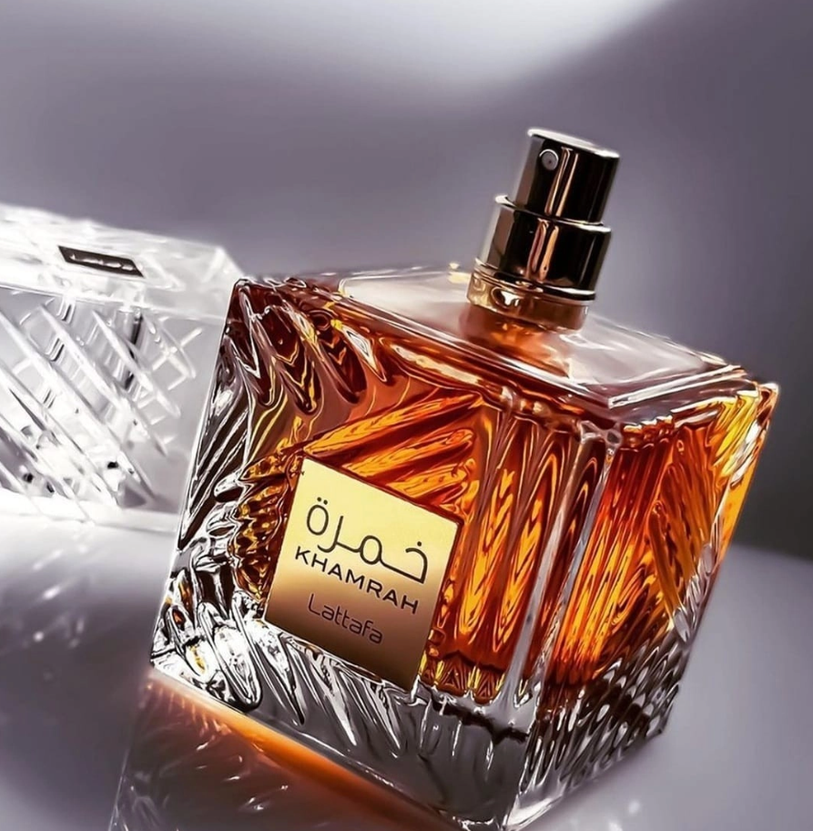

1. Vanilla Baby
Author: Savoiu Ioana | Date: March 2025

Vanilla Baby is a lighter, more delicate interpretation of vanilla, designed to be soft, cozy, and comforting. This fragrance embodies the gentle sweetness of vanilla with a touch of powdery and musky undertones, creating a soothing and tender scent. Ideal for those who prefer a subtle and intimate vanilla aroma, Vanilla Baby is a perfect everyday fragrance that exudes warmth, innocence, and effortless elegance.
Scent Profile:
Dominant Notes: Vanilla, Jasmine, Sandalwood, Musk, Honey / A sweet and floral combination with woody and musky undertones, creating a warm and seductive experience.
Performance:
Longevity: Excellent, due to the high concentration of essential oils (40%), lasting throughout the day.
Sillage: Strong, leaving a noticeable scent trail.
Projection: Moderate to high, ideal for making a lasting impression.
Best for:
All seasons, thanks to the balance of sweet and woody notes.
Special occasions, romantic evenings, or when you want to stand out.
2. MOD Vanilla
Author: Savoiu Ioana | Date: March 2025

MOD Vanilla by Ariana Grande is a fragrance launched in 2022 as part of her perfume collection. This scent opens with top notes of juicy plum, creamy musk, and a luminous touch of pink freesia. The heart reveals a rich combination of orris butter and white praline, adding a decadent and smooth texture. The base is a warm and addictive blend of vanilla absolute and cocoa butter, leaving a lasting and memorable impression.
Scent Profile:
Top Notes: Musk, Plum, Pink Freesia / A fruity and slightly spicy opening that adds freshness and depth.
Middle Notes: Praline, Orris Root / A sweet and floral heart, offering a rich and indulgent sensation.
Base Notes: Vanilla, Cocoa Butter / A creamy and comforting finish that lingers beautifully on the skin.
Performance:
Longevity: Moderate, around 4-6 hours.
Sillage: Moderate, leaving a delicate trail.
Projection: Intimate, suitable for daily wear.
Best for:
Fall and winter seasons.
Casual occasions or romantic dates.
3. Lattafa Khamrah
Author: Savoiu Ioana | Date: March 2025

Lattafa Khamrah is a luxurious and captivating unisex fragrance known for its warm, sweet, and spicy aroma. It is often compared to high-end gourmand perfumes due to its rich, dessert-like scent profile.
Scent Profile:
Top Notes: Cinnamon, Nutmeg, Bergamot / A spicy and slightly citrusy opening that adds warmth and depth.
Middle Notes: Dates, Praline, Tuberose, Mahonial / A blend of sweetness and floral elements, giving it a rich and indulgent heart.
Base Notes: Vanilla, Tonka Bean, Myrrh, Amberwood, Benzoin, Akigalawood / A creamy, resinous, and woody finish that makes the fragrance long-lasting and addictive.
Performance:
Longevity: Excellent, often lasting 8+ hours on the skin.
Sillage: Strong, leaving a noticeable trail.
Projection: Moderate to high, making it perfect for colder weather and evening wear.
Best for:
Fall and winter seasons.
Special occasions, date nights, or when you want to stand out.
4. By the Fireplace
Author: Savoiu Ioana | Date: March 2025

By the fireplace by Maison Margiela is a warm, cozy, and slightly smoky unisex fragrance from the Replica collection, designed to evoke the feeling of sitting by a crackling fire on a cold winter night.
Scent Profile:
Top Notes: Pink Pepper, Orange Blossom, Cloves / A spicy and slightly citrusy opening that adds warmth.
Middle Notes: Chestnut, Guaiac Wood, Juniper / A roasted, woody heart that gives the fragrance its signature "by the fire" vibe.
Base Notes: Vanilla, Peru Balsam, Cashmeran / A creamy, slightly sweet, and resinous dry-down that lingers beautifully on the skin.
Performance:
Longevity: 6-8 hours, sometimes longer in colder weather.
Sillage: Moderate, leaving a cozy scent trail.
Projection: Moderate, intimate yet noticeable.
Best for:
Fall and winter seasons.
Evening wear, casual outings, and cozy indoor settings.
5. Lady Million
Author: Savoiu Ioana | Date: March 2025

Lady Million by Paco Rabanne is a luxurious, sensual, and bold fragrance, perfect for women who want to exude confidence and allure.
Scent Profile:
Top Notes: Raspberry, Bitter Orange Extract / A fruity and slightly zesty opening that adds vibrancy.
Middle Notes: Jasmine Sambac, African Orange Flower, Gardenia / A rich floral heart, exuding femininity and elegance.
Base Notes: Patchouli, White Honey, Amber / A warm, sensual, and slightly sweet dry-down that enhances the perfume’s depth.
Performance:
Longevity: Long-lasting, around 6-8 hours.
Sillage: Strong, leaving an elegant and noticeable trail.
Projection: Moderate to high, making a bold statement.
Best for:
Fall and winter seasons.
Special occasions, evening wear, or when you want to feel confident and glamorous.